scale_gradient
Continuous colour scale
Details
See also
- scale_colour_gradient2: continuous colour scale with midpoint
- colorRamp: for details of interpolation algorithm
Examples
> dsub <- subset(diamonds, x > 5 & x < 6 & y > 5 & y < 6) > (d <- qplot(x, y, data=dsub, colour=z)) 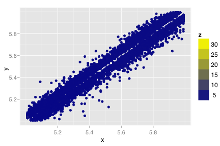 > # That one point throws our entire scale off. We could > # remove it, or manually tweak the limits of the scale > > # Tweak scale limits. Any points outside these > # limits will not be plotted, but will continue to affect the > # calculate of statistics, etc > d + scale_colour_gradient(limits=c(3, 10)) 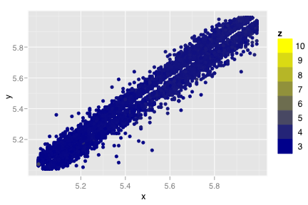 > d + scale_colour_gradient(limits=c(3, 4))> # Setting the limits manually is also useful when producing > # multiple plots that need to be comparable > > # Alternatively we could try transforming the scale: > d + scale_colour_gradient(trans = "log") 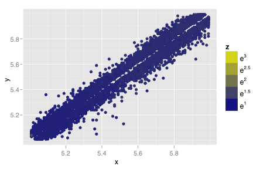 > d + scale_colour_gradient(trans = "sqrt") 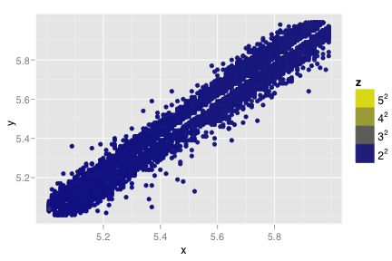 > > # Other more trivial manipulations, including changing the name > # of the scale and the colours. > > d + scale_colour_gradient("Depth") 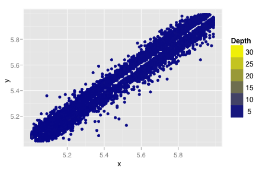 > d + scale_colour_gradient(expression(Depth[mm])) 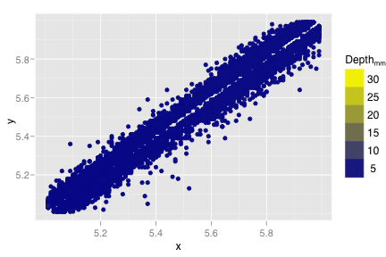 > > d + scale_colour_gradient(limits=c(3, 4), low="red") 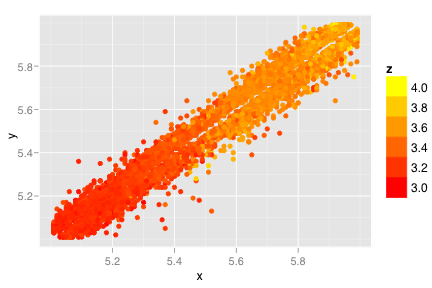 > d + scale_colour_gradient(limits=c(3, 4), low="red", high="white") 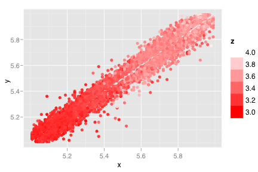 > # Much slower > d + scale_colour_gradient(limits=c(3, 4), low="red", high="white", space="Lab") 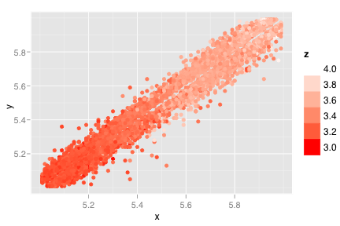 > d + scale_colour_gradient(limits=c(3, 4), space="Lab") 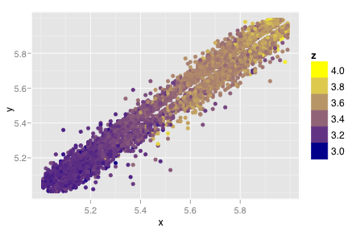 > > # Can also make partially transparent > d + scale_colour_gradient(limits=c(3, 4), alpha=0.5) 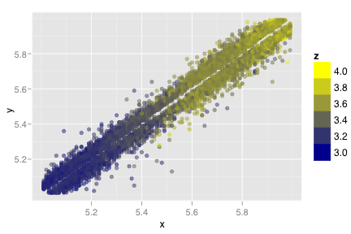 > > # scale_fill_continuous works similarly, but for fill colours > (h <- qplot(x - y, data=dsub, geom="histogram", binwidth=0.01, fill=..count..)) 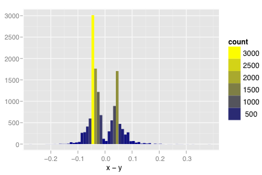 > h + scale_fill_continuous(low="black", high="white", limits=c(0,NA)) 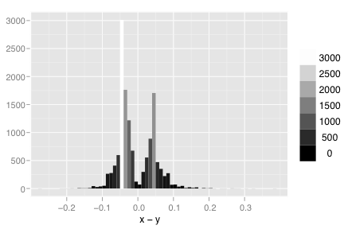